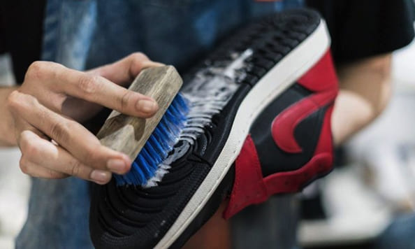

Kenapa Membersihkan Sepatu Itu Penting?
Sepatu kets yang rutin dibersihkan akan lebih awet dan tampak seperti baru. Kotoran yang menumpuk bisa merusak bahan dan warna sepatu.
Bahan & Alat yang Dibutuhkan
- Air hangat
- Sabun lembut / deterjen cair
- Sikat bulu halus
- Lap kain lembut
Langkah-langkah Membersihkan
1. Lepas tali sepatu & keringkan debu
Mulai dengan melepaskan tali dan mengetuk-ngetuk sepatu agar debu lepas.

2. Basahi & sikat perlahan
Gunakan air hangat + sabun lembut, sikat perlahan area kotor.
3. Bilas & keringkan
Bilas dengan air bersih, lalu lap kering dan letakkan di tempat teduh agar kering sempurna.
Tips Tambahan & FAQ
Misalnya: jangan jemur langsung di matahari, gunakan shoe tree agar sepatu tetap bentuk, dan rutin bersihkan setiap 2 minggu.